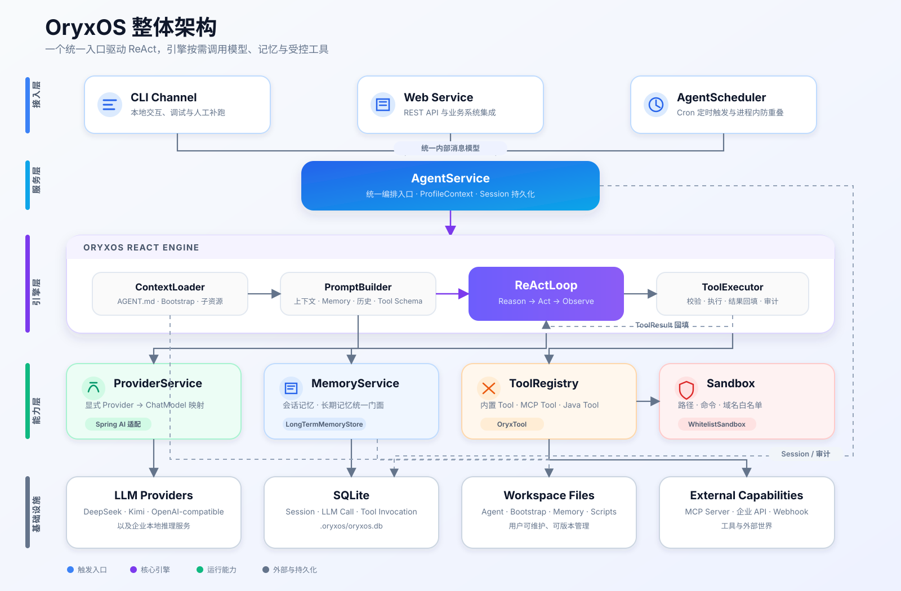

01
Provider
通过显式映射接入 DeepSeek、Kimi 与 OpenAI-compatible 模型，保持模型选择清晰、可控。
MODEL ROUTING业务 Agent 只描述任务和边界；重复、复杂的运行基础设施由 OryxOS 统一提供。
通过显式映射接入 DeepSeek、Kimi 与 OpenAI-compatible 模型，保持模型选择清晰、可控。
MODEL ROUTING自研 Reason → Act → Observe 循环，统一完成上下文组装、模型调用和工具结果回填。
CONTROLLED LOOP以统一门面管理会话记忆和长期记忆，让 Agent 跨会话保留真正有价值的上下文。
CONTEXT STORE内置 Tool、MCP Tool 与 Java Tool 统一注册，并在白名单 Sandbox 中执行和审计。
SAFE EXECUTION通过稳定 REST API 把 Agent 能力接入业务系统，与 CLI 和定时任务复用同一执行链路。
ONE SERVICE PATHCLI、Web Service 与定时任务进入同一个 AgentService。ReAct 引擎按需调度 Provider、Memory 和 Tool，每一次关键调用都可被记录和审计。

无需为每个 Agent 重写后端服务。一个自足目录承载任务定义、技能、脚本和参考资料。
---
name: daily-weather
provider: deepseek
tools: [http_get, notify]
schedule: "0 30 7 * * *"
---
# Daily Weather Agent
Check today's weather, create a practical
outfit suggestion, then notify the user.当前版本是可运行的工程骨架。使用 JDK 21 和 Maven 构建，即可启动官网及基础健康检查接口。
OryxOS 处于早期开发阶段，核心 Agent 运行能力仍在持续实现，暂不建议用于生产环境。
$ git clone https://github.com/youngooo/oryx-test.git
$ cd oryx-test
$ mvn clean package
$ java -jar oryxos-boot/target/oryxos-boot-0.1.0-SNAPSHOT.jar
# http://localhost:8080
✓ OryxOS is running项目按纵向链路推进，每一阶段先形成可运行、可测试的结果。
九模块 Maven 工程、Boot 与 CLI 主入口、官网和基础 API。
打通模型接入、自研循环和最小 Agent 执行链路。
加入持久记忆、统一工具注册、Sandbox 和调用审计。
完善 REST API，跑通三个端到端 Agent 示例。
查看代码、阅读设计，或者从一个 Issue 开始参与 OryxOS。